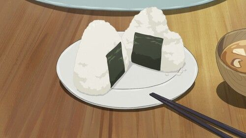

Deep-Fried Shrimp Onigiri

Description
These Deep-Fried Shrimp Onigiri are a fun twist on traditional Japanese rice balls.
Crispy on the outside and filled with juicy shrimp and fluffy rice on the inside, these onigiri are the perfect snack or meal.
Ingredients
- 1 egg
- 1 cup all-purpose flour (125 g), divided
- ½ cup cold water (120 mL)
- 8 raw shrimps, peeled and deveined, tails left on
- oil, for frying
- ¾ cup dashi (180 g)
- ¼ cup soy sauce (60 mL)
- ¼ cup mirin (60 mL)
- 2 ½ cups cooked rice (345 g), for serving
- salt, to taste
- 1 roasted seaweed strip, cut into 8 equal pieces
Steps
- Whisk the egg in a small bowl. Add ½ cup (60 g) of flour and the cold water and whisk to combine. Cover with plastic wrap and chill in the refrigerator.
- Add the remaining flour to a shallow dish. Dredge each shrimp in the flour, shaking off any excess.
- Heat the oil in a large pot until it reaches 350°F (180˚C).
- Dip the floured shrimp into the chilled batter.
- Fry the shrimp until they float to the top and are golden brown in color. Use a slotted spoon to transfer the shrimp to a paper towel-lined plate to drain.
- In a medium pan, combine the dashi, soy sauce, and mirin, and bring to a boil over high heat. Transfer to a small bowl.
- To make the onigiri rice balls, first wet your palms with water and coat with a little bit of salt.
- Take a handful of rice and make an indent in the middle. Dip a shrimp into the soy sauce mixture, then place in the center of the rice.
Wrap the rice around the shrimp, creating a triangle shape.
- Wrap a strip of seaweed around the rice ball. Repeat with remaining ingredients.